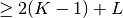
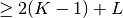
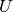
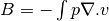

Some Standard assembly procedures (low-level generic assembly)¶
Procedures defined in the file getfem/getfem_assembling.h allow the assembly of stiffness matrices, mass matrices and boundary conditions for a few amount of classical partial differential equation problems. All the procedures have vectors and matrices template parameters in order to be used with any matrix library.
CAUTION: The assembly procedures do not clean the matrix/vector at the begining of the assembly in order to keep the possibility to perform several assembly operations on the same matrix/vector. Consequently, one has to clean the matrix/vector before the first assembly operation.
Laplacian (Poisson) problem¶
An assembling procedure is defined to solve the problem:
where  is an open domain of arbitrary dimension,
is an open domain of arbitrary dimension,  and are parts of the boundary of ,
is the unknown, is a given coefficient,
and are parts of the boundary of ,
is the unknown, is a given coefficient,  is a given
source term, the prescribed value of on
and is the prescribed normal derivative of
on . The function to be called to assemble the
stiffness matrix is:
is a given
source term, the prescribed value of on
and is the prescribed normal derivative of
on . The function to be called to assemble the
stiffness matrix is:
getfem::asm_stiffness_matrix_for_laplacian(SM, mim, mfu, mfd, A);
where
- SM is a matrix of any type having the right dimension (i.e. mfu.nb_dof()),
- mim is a variable of type getfem::mesh_im defining the integration method used,
- mfu is a variable of type getfem::mesh_fem and should define the finite element method for the solution,
- mfd is a variable of type getfem::mesh_fem (possibly equal to mfu) describing the finite element method on which the coefficient is defined,
- A is the (real or complex) vector of the values of this coefficient on each degree of freedom of mfd.
Both mesh_fem should use the same mesh (i.e. &mfu.linked_mesh() == &mfd.linked_mesh()).
It is important to pay attention to the fact that the integration methods stored
in mim, used to compute the elementary matrices, have to be chosen of
sufficient order. The order has to be determined considering the polynomial
degrees of element in mfu, in mfd and the geometric transformations for
non-linear cases. For example, with linear geometric transformations, if mfu
is a FEM, and mfd is a  FEM, the integration will
have to be chosen of order , since the elementary integrals
computed during the assembly of SM are
(with
FEM, the integration will
have to be chosen of order , since the elementary integrals
computed during the assembly of SM are
(with  the basis
functions for mfu and
the basis
functions for mfu and  the basis functions for mfd).
the basis functions for mfd).
To assemble the source term, the function to be called is:
getfem::asm_source_term(B, mim, mfu, mfd, V);
where B is a vector of any type having the correct dimension (still
mfu.nb_dof()), mim is a variable of type getfem::mesh_im defining the integration
method used, mfd is a variable of type getfem::mesh_fem (possibly equal to mfu)
describing the finite element method on which is defined, and V
is the vector of the values of on each degree of freedom of mfd.
The function asm_source_term also has an optional argument, which is a reference to a getfem::mesh_region (or just an integer i, in which case mim.linked_mesh().region(i) will be considered). Hence for the Neumann condition on , the same function:
getfem::asm_source_term(B, mim, mfu, mfd, V, nbound);
is used again, with nbound is the index of the boundary in the linked mesh of mim, mfu and mfd.
There is two manner (well not really, since it is also possible to use Lagrange
multipliers, or to use penalization) to take into account the Dirichlet condition
on , changing the linear system or explicitly reduce to the
kernel of the Dirichlet condition. For the first manner, the following function is
defined:
getfem::assembling_Dirichlet_condition(SM, B, mfu, nbound, R);
where nbound is the index of the boundary  where the Dirichlet
condition is applied, R is the vector of the values of on each
degree of freedom of mfu. This operation should be the last one because it
transforms the stiffness matrix SM. It works only for Lagrange elements. At
the end, one obtains the discrete system:
where the Dirichlet
condition is applied, R is the vector of the values of on each
degree of freedom of mfu. This operation should be the last one because it
transforms the stiffness matrix SM. It works only for Lagrange elements. At
the end, one obtains the discrete system:
where  is the discrete unknown.
For the second manner, one should use the more general:
getfem::asm_dirichlet_constraints(H, R, mim, mf_u, mf_mult,
mf_r, r, nbound).
See the Dirichlet condition as a general linear constraint that must satisfy the
solution  . This function does the assembly of Dirichlet conditions of
type for all
. This function does the assembly of Dirichlet conditions of
type for all  in
the space of multiplier defined by mf_mult. The fem mf_mult could be often
chosen equal to mf_u except when mf_u is too “complex”.
in
the space of multiplier defined by mf_mult. The fem mf_mult could be often
chosen equal to mf_u except when mf_u is too “complex”.
This function just assemble these constraints into a new linear system , doing some additional simplification in order to obtain a “simple” constraints matrix.
Then, one should call:
ncols = getfem::Dirichlet_nullspace(H, N, R, Ud);
which will return a vector which satisfies the Dirichlet condition,
and an orthogonal basis  of the kernel of
of the kernel of  . Hence, the discrete
system that must be solved is:
. Hence, the discrete
system that must be solved is:
and the solution is $U=N U_{int}+U_d$. The output matrix should be a
(sparse) matrix but should be resized to ncols
columns. The output vector should be a vector. A big
advantage of this approach is to be generic, and do not prescribed for the finite
element method mf_u to be of Lagrange type. If mf_u and mf_d are
different, there is implicitly a projection (with respect to the  norm)
of the data on the finite element mf_u.
norm)
of the data on the finite element mf_u.
If you want to treat the more general scalar elliptic equation , where is square matrix, you should use:
getfem::asm_stiffness_matrix_for_scalar_elliptic(M, mim, mfu,
mfdata, A);
The matrix data A should be defined on mfdata. It is expected as a vector
representing a tensor (in Fortran order), where
 is the mesh dimension of mfu, and is the number of dof
of mfdata.
is the mesh dimension of mfu, and is the number of dof
of mfdata.
Linear Elasticity problem¶
The following function assembles the stiffness matrix for linear elasticity:
getfem::asm_stiffness_matrix_for_linear_elasticity(SM, mim, mfu,
mfd, LAMBDA, MU);
where SM is a matrix of any type having the right dimension (i.e. here mfu.nb_dof()), mim is a variable of type getfem::mesh_im defining the integration method used, mfu is a variable of type getfem::mesh_fem and should define the finite element method for the solution, mfd is a variable of type getfem::mesh_fem (possibly equal to mfu) describing the finite element method on which the Lamé coefficient are defined, LAMBDA and MU are vectors of the values of Lamé coefficients on each degree of freedom of mfd.
ご用心
Linear elasticity problem is a vectorial problem, so the target dimension of mfu (see mf.set_qdim(Q)) should be the same as the dimension of the mesh.
In order to assemble source term, Neumann and Dirichlet conditions, same functions as in previous section can be used.
Stokes Problem with mixed finite element method¶
The assembly of the mixed term  is done with:
getfem::asm_stokes_B(MATRIX &B, const mesh_im &mim,
const mesh_fem &mf_u, const mesh_fem &mf_p);
Assembling a mass matrix¶
Assembly of a mass matrix between two finite elements:
getfem::asm_mass_matrix(M, mim, mf1, mf2);
It is also possible to obtain mass matrix on a boundary with the same function:
getfem::asm_mass_matrix(M, mim, mf1, mf2, nbound);
where nbound is the region index in mim.linked_mesh(), or a mesh_region object.

目次
前のトピックへ
Compute arbitrary terms - low-level generic assembly procedures
次のトピックへ
Interpolation of arbitary quantities
Download
Main documentations
- GetFEM++ User documentation
- Python Interface
- Matlab Interface
- Scilab Interface
- Gmm++
- GetFEM++ project